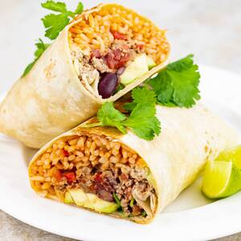

Carbonara

Recipe for a delicious burrito
Discover how to make superb burrito. With the right technique, you can make it perfect every time
Ingredients:
- 1 pound ground beef
- 1 envelope taco seasoning
- 1 can (16 ounces) refried beans
- 6 flour tortillas (12 inches), warmed
- 1 cup shredded Colby-Monterey Jack cheese
- 4 teaspoons canola oil
- Sour cream and salsa
Steps:
- In a large cast-iron or other heavy skillet, cook beef over medium heat until no longer pink; drain. Stir in taco seasoning; remove from skillet and set aside. Wipe skillet clean.
- In a small saucepan, cook refried beans over medium-low heat until heated through, 2-3 minutes.
- Spoon about 1/3 cup of beans off-center on each tortilla; top with 1/4 cup beef mixture. Sprinkle with cheese. Fold sides and ends of tortillas over filling and roll up.
- In same skillet over medium-high heat, brown burritos in oil on all sides. Serve with sour cream and salsa.
Return to main page